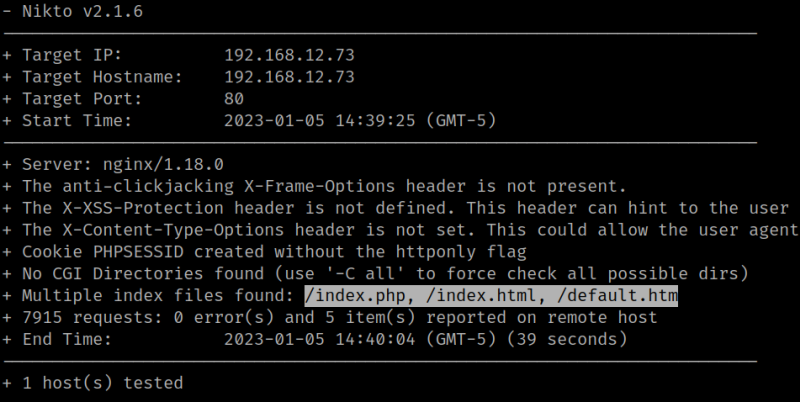
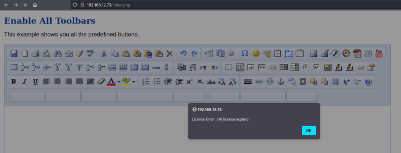

3.1 Nikto
1. Enumerate the victim's machine with “nikto”.
$ nikto -h 192.168.12.73
Output:

There are 3 index files.
2. Visit http://192.168.12.73/default.htm.
There's an Online HTML Editor.
3. Navigate to http://192.168.12.73/index.php.

4. Accept the error message.